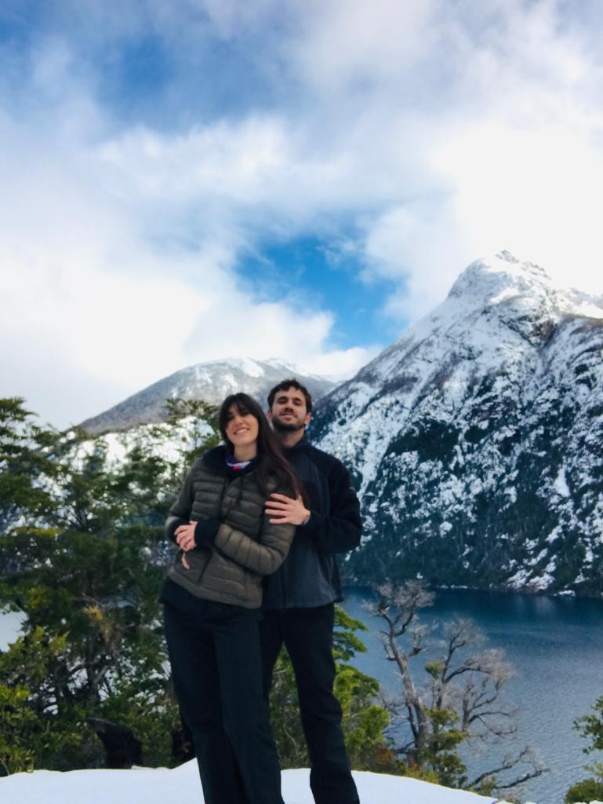

<!DOCTYPE html>
<html lang="en">
  <head>
    <meta charset="UTF-8" />
    <meta http-equiv="X-UA-Compatible" content="IE=edge" />
    <meta name="viewport" content="width=device-width, initial-scale=1.0" />
    <link rel="stylesheet" href="../CSS/style2.css">
    <title>LAFLACAGORDA - About <title>
      <meta name: “description” content=” ¿Querés saber cómo surgió La Flaca Gorda? ¡Conocénos!”>
      <meta name: “keywords” content=”Food Truck, Patagonia, Viajes, Argentina, Comida, Gastronomia”>      
    <link
      href="https://fonts.googleapis.com/css2?family=Merienda:wght@700&family=Rock+Salt&display=swap"
      rel="stylesheet"
    />
    <link
      href="https://fonts.googleapis.com/css2?family=Poppins:wght@700&family=Roboto:wght@900&display=swap"
      rel="stylesheet"
    />
  </head>
  <body>
    <!-- Header -->
    <header>
      <nav>
        <ul>
          <li><a href="../index.html">INICIO</a></li>
          <li><a href="./laflacagorda.html">LAFLACAGORDA</a></li>
          <li><a href="./about.html">ABOUT</a></li>
          <li><a href="./sustentabilidad.html">SUSTENTABILIDAD</a></li>
          <li><a href="./contacto.html">CONTACTO</a></li>
        </ul>
      </nav>
      <div class="logo">
        <div class="logo__img">
          
        </div>
      </nav>
    </header>
    <!-- Main -->
    <main>
      <!-- Seccion1 -->
      <section>
        <div class="goypancho">
          
        </div>
        <div class="cambio">
          <h5>Porque el cambio</h5>
          <p>
            Aquello que repta sin ser oido.<br />
            Que avanza <br />
            con restadura sabiduria de parásito
            <br />
            Las dagas se volvieron contra mi.<br />
            La vibra oscura atrajo los basilliscos <br />
            nacidos de la náusea
        </div>
        </p>
        <div class="laflacaypancho">
          <div class="lfg">
            <!-- Agregar foto -->
          </div>
          <p>
            <h3>La faca y pancho</h3>
            La historia comienza con dos locos <br />
            No tan locos en realidad, <br />
            Buscando una mejor vista y un despertar <br />
            No hay mejor lugar, <br />
            Que cuando se está en familia <br />
          </p><br/>
        </div>
      </section>
    </main>
    <footer>
      <p class="pfooter">
        LFG con Amor | <a href="./pages/contacto.html">Comenta</a> | Copyright
        2022 | Bariloche, Argentina
      </p>
    </footer>
  </body>
</html>
